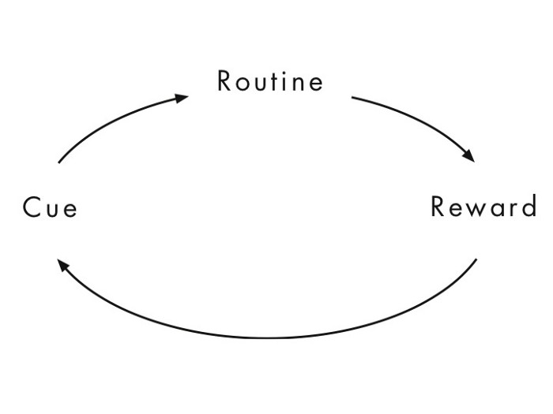

← ← ← 5/3/2022, 8:11:49 PM | Posted by: Lorenzo Battistela
In the history of humanity, if you pay attention, you will see that we are all built by habits, from simple to complex things we do in our day-to-day. That said, it’s important to say that not all habits are good, since things like drinking and smoking (that we call addictions) are also habits. So how do they work, and how can we manage them to be good and help us to be productive and feel good? That’s what we are about to see now!
An habit is usually defined as a usual way of behaving, being something that a person does often in a regular and repeated way. For example, the order you do things after waking up is a habit. I usually wake up, brush my teeth, take a shower and have breakfast. We do not think about those things every morning, it’s automatic for our brain, because we do it repeatedly. Another example is driving. In the beggining, driving can be hard, since attention is demanded in lots of things, but as the time fly by, driving becomes automatic (and this can be bad), because you’ve done it thousands of times and our brain get used to it.
To explain this behavior, this is what we call an habit loop:
First, a cue, that is, an event or situation that triggers the automatic behavior, or habit. Then a routine, which is the automatic behavior mentioned before, and then the reward, the positive reaction of the brain to the routine. This loop can be seen in lots of habits like running in the morning. Let’s say you left your running shoes close to the door. Than the cue is you see your shoes and you desire the endorphin you know you’re getting. The routine is running and the reward is feeling good (endorphin) after an exercise and the sensation of getting the work done.
Turning a bad habit into a good one is really hard. Habits are almost automatic, and it takes huge effort to change them. But it’s not impossible. However, for this topic, it’s important to bring up the golden rule of habit change, that consists in stopping addictive habits and replace them with new ones.
It says that keeping the initial cue and the reward, the routine can be changed, although research points that believing in the change is critical, and individuals who do not believe in what they are doing will most likely fall short of the expectations and give up.
A good example is Alcoholic Anonymous, a group of people who get together and try to overcome and replace the habit of drinking. Groups are likely to work on those situations, since it is easier to believe in the change seeing examples and identifying with others.
The answer for this question is yes, they can and will save effort a lot of times in a human life, basically because it is an habit function at the first place. For instance, in the field of sports, the repeated practice (or habit building) of moves and plays makes the effort almost zero, since the brain have already done that routine millions of times, it knows what he has to do, and we can see this happening in sports like American Football and Basketball. Have you seen a basketball player thinking a lot before shooting the ball? No, because they practiced that shoot hundreds of times, making it automatic and facilitating it for the brain. Repetition and consistence is the key. When you do something for habit, your brain can think in other things but that one you’re already doing, being extremely useful when playing competitive strategic sports.
Indeed, the proof of that in day-to-day situations is driving a car. You have to pay attention in the car gear, the traffic, mirrors, steering wheel and still have to remember that your son Timmy forgot the backpack at home! After a while, your brain automate the big process of driving, releasing time for your brain to think of Timmy’s backpack. It’s amazing, isn’t it?
To sum up, habits are our entire life in small routines, and we need to know that bad habits can be turned into good ones with effort and faith. So use the habit loop and golden rule of habit change in your favor and keep your brain working!